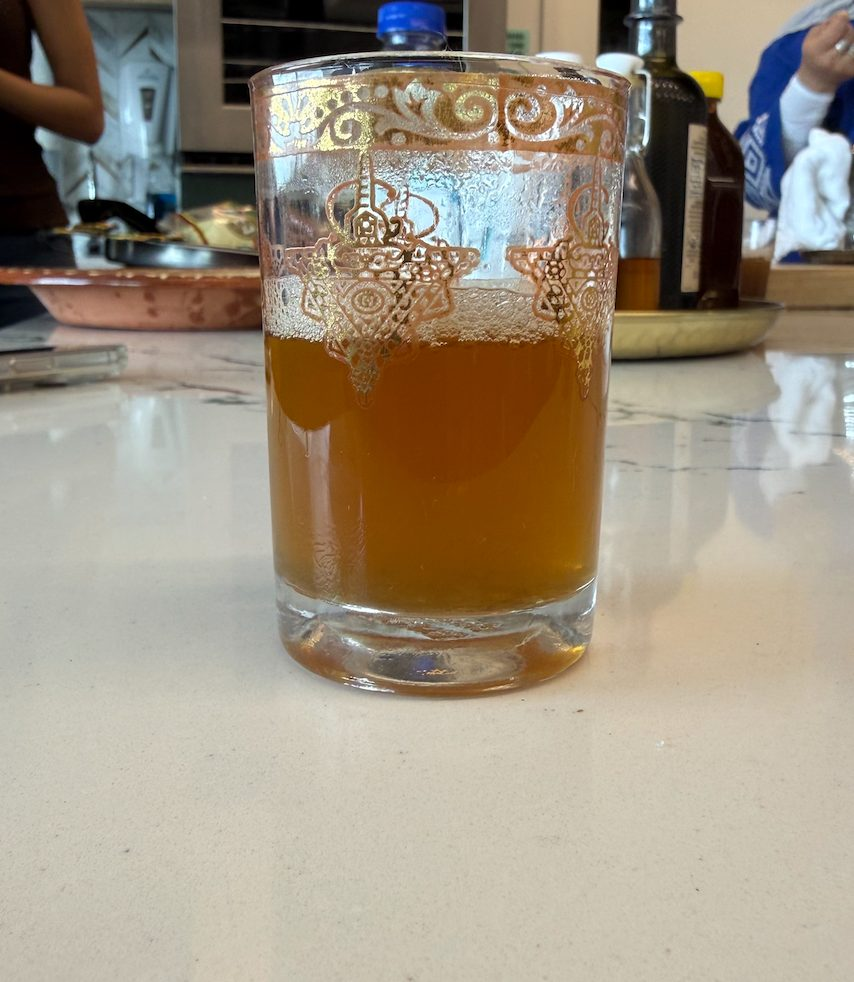
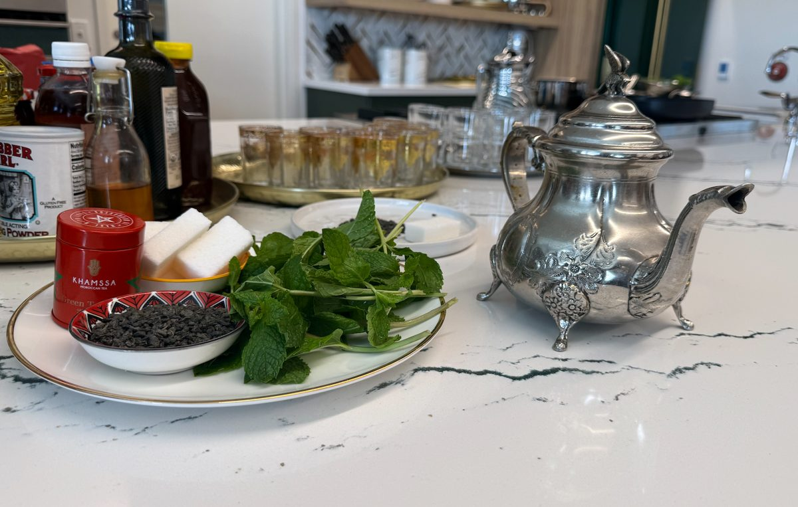
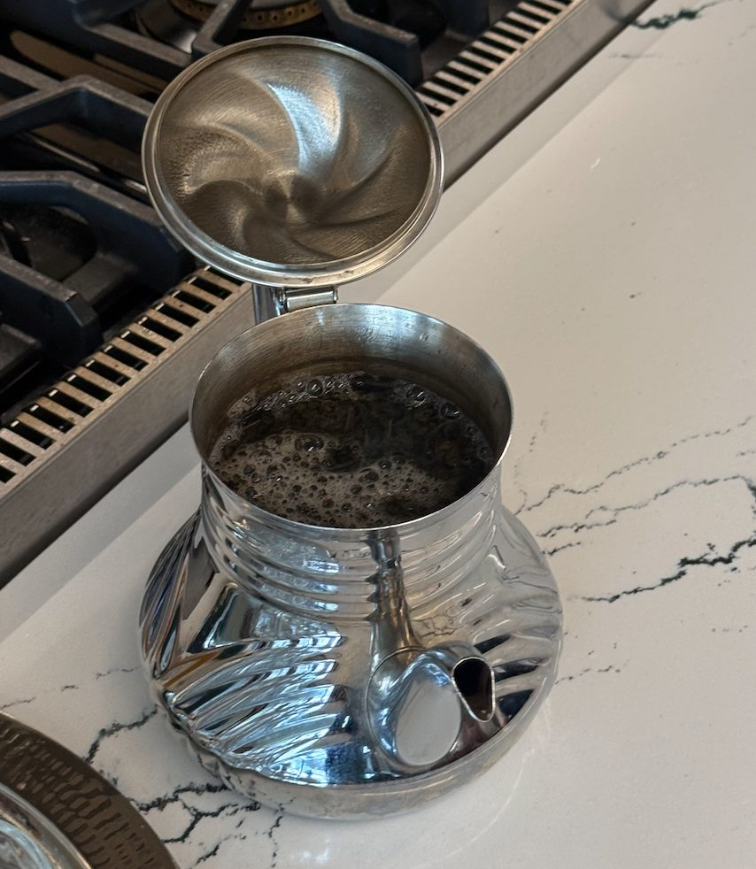
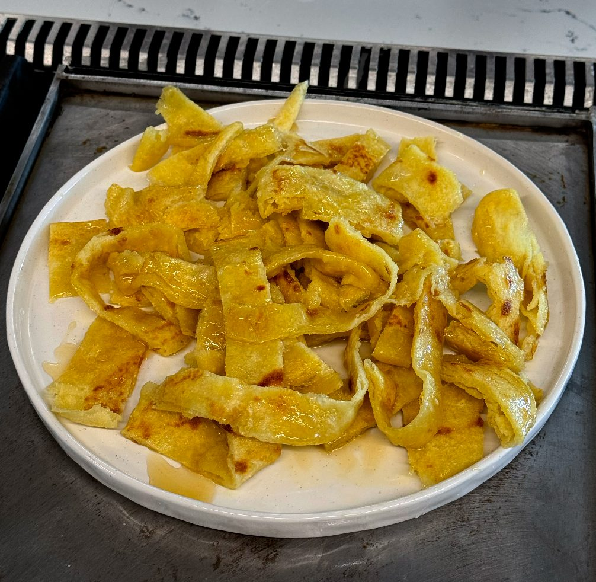

Before this cooking demonstration, I usually thought of food as something that connected people through eating together. However, this experience showed me that food can bring people together long before anyone actually takes a bite. Through learning about Moroccan tea, preparing msemmen, and participating in the traditions surrounding both, I was able to see how food can communicate hospitality, respect, and cultural identity. Instead of simply learning about Moroccan culture from a lecture or reading, I was able to experience some of its traditions through my own hands.
The demonstration began with Ustadha Raja teaching us about Moroccan tea and using it as a way to introduce us to Moroccan culture. One of the first things I learned was Moroccan vocabulary related to the ingredients, including the word “skar,” meaning sugar. We also learned about the importance of the designs on Moroccan tea glasses and how they can help identify which glass belongs to each person. These details initially seemed small to me, but they made me realize that even objects used during an ordinary meal or drink can have cultural meaning.

We then learned about the importance of tea in a Moroccan household. Ustadha Raja explained that tea is an important part of welcoming guests and that a household should have tea available when receiving visitors, along with at least cookies to offer them. This lesson connected with research on Moroccan tea culture. Monika Sudakov's anthropological thesis on Moroccan mint tea examines how the ritual of tea consumption is connected to cultural values including hospitality and social behavior (Sudakov). A cultural guide from USAC Study Abroad similarly describes mint tea as a symbol of hospitality and an important part of everyday life, noting that it is commonly offered to guests and shared during conversations (Doughty). Learning this in class made the tradition feel less like an abstract cultural fact and more like something I could understand through the experience of preparing and sharing the tea myself.

One of the most memorable parts of the tea demonstration was learning how the tea is poured from a height. Ustadha Raja demonstrated the technique and explained to us that the foam created on top helps protect the tea from anything that might fall into it. Outside research also provides a practical explanation for the technique: pouring the tea from a height aerates it and helps create the characteristic foam on the surface (Doughty). Seeing the technique firsthand made me appreciate how a simple action such as pouring a drink can contain both a practical purpose and a cultural tradition.

After preparing the tea, we moved on to making msemmen. Msemmen is a traditional Moroccan flatbread with a square shape and multiple thin layers. Research on the dish describes it as a flatbread made by stretching dough very thin, applying fat and semolina, folding the dough into a square, and cooking it on a griddle (Moroccan Culture Editorial Team). Msemmen is also commonly served with sweet toppings such as honey (Benkhalti). Knowing this background helped me understand what we were making, but actually preparing it in class gave me a much better understanding of how the dish comes together.
Although the process sounded more complicated when I first heard about it, I found making the msemmen surprisingly easy after watching Ustadha Raja demonstrate the technique. I watched her pull and stretch the dough before adding the semolina, baking powder, and butter and folding it into its final shape. Once I saw how the process worked, it became much easier to understand what I was supposed to do. Rather than following a written recipe step-by-step, I was learning by watching someone physically demonstrate the movements. That was one of the most interesting parts of the activity for me because I could immediately see how much of cooking can be learned through observation.
After we prepared the msemmen, we waited for it to cook. When it was finished, I added honey to mine and really enjoyed the sweetness. Research on msemmen also identifies honey as a traditional accompaniment to the dish (Benkhalti). However, tasting it after making it myself made the experience feel different from simply being served a dish. I had watched the ingredients come together, participated in preparing the dough, waited for it to cook, and then finally tasted the finished product. The process gave me a better appreciation for how much meaning can be attached to food when people participate in making it themselves.

While we were waiting for the msemmen to cook, Ustadha Raja also taught us about another cultural practice: serving others beginning from the right-hand side and continuing toward the left. This was another example of how cultural values can be communicated through actions rather than simply through words. The same idea appeared throughout the demonstration. The way tea was poured, the way food was served, and the way guests were welcomed were all connected to larger ideas of respect and hospitality. Outside research similarly describes Moroccan tea service as a central part of welcoming guests and bringing people together (Rahal).
The atmosphere of the demonstration also contributed to my experience. Instead of sitting in class and listening to a lecture, we were actively doing something together. The classroom became a place where we could watch a demonstration, prepare food, ask questions, and eventually eat what we had made. The smell of the ingredients and the process of waiting for the food to cook made the experience feel much more connected to an actual kitchen than a typical class period. I think this physical environment helped me understand the cultural information more effectively because I was not only hearing about traditions; I was participating in them.
Before the demonstration, I expected to learn generally about Moroccan food and perhaps watch someone prepare a traditional dish. What I did not expect was how much cultural information would be communicated through the preparation itself. I learned vocabulary, hospitality customs, serving practices, the significance of tea, and the technique behind making msemmen. Most importantly, I realized that food can preserve knowledge that might otherwise be difficult to explain in a textbook. Watching Ustadha Raja demonstrate the process allowed us to learn through observation and participation. This experience also changed how I think about the relationship between food and culture. A dish such as msemmen is not simply a combination of ingredients. The process of making it involves particular techniques, such as stretching, layering, folding, and cooking the dough (Moroccan Culture Editorial Team). Likewise, Moroccan tea is not simply a drink. Research on Moroccan tea consumption shows that the ritual surrounding tea can reflect broader cultural values and social relationships (Sudakov). Experiencing these practices in class helped me understand these ideas in a way that reading about them alone would not have.
Ultimately, the cooking demonstration helped me answer the question, “What is it about food that brings us together?” I think the answer is that food creates an opportunity for people to share more than a meal. It allows people to share traditions, stories, skills, and values. During this demonstration, I was not Moroccan, but I was able to participate in a small part of Moroccan culture through tea and msemmen. I learned that cultural connection does not always require knowing everything about another culture beforehand. Sometimes it begins with something as simple as watching someone pour tea, learning how to stretch dough, serving another person, or sitting together and enjoying something you made. That is what made this experience meaningful to me: food became a way of learning about another culture while also creating a shared experience with the people around me.
References
Benkhalti, Salima. “Moroccan Flatbread (Msmen).” Salima’s Kitchen, 23 Dec. 2025. Salima's Kitchen
Doughty, Jeremy R. “Mint Tea 101.” USAC Study Abroad News, 9 June 2026. USAC Study Abroad
Moroccan Culture Editorial Team. “Moroccan Msemen Recipe: Flaky, Layered Flatbread.” Moroccan Culture, updated 29 July 2026. Moroccan Culture
Rahal, M. Scoping Study on the Protection of Traditional Cultural Expressions in Morocco. World Intellectual Property Organization. The report describes mint tea as a cornerstone of Moroccan hospitality and its role in welcoming guests and bringing families together. World Intellectual Property Organization report
Sudakov, Monika. The Social Significance of Mint Tea Consumption in Morocco: Reflections on Its Symbolic Representation of Muslim Faith, Gender Prescriptions, Socio-Economics and Hospitality. University of Nevada, Las Vegas, 2005. UNLV Digital Scholarship